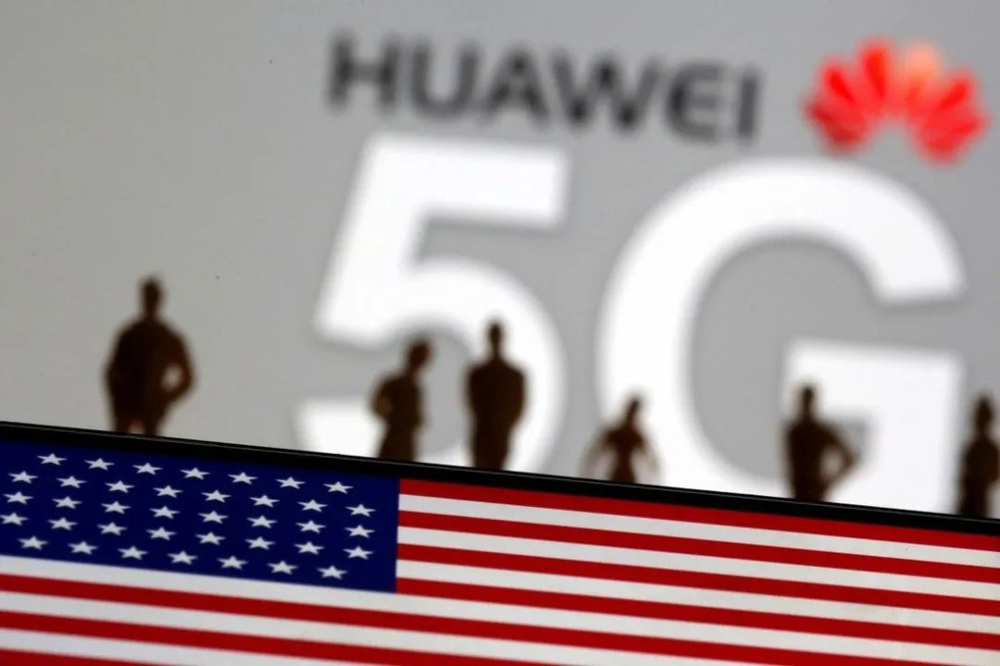
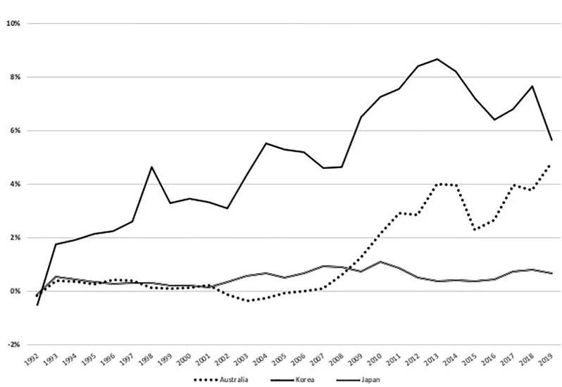
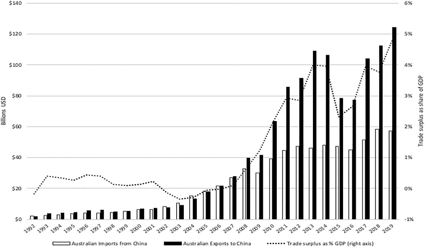
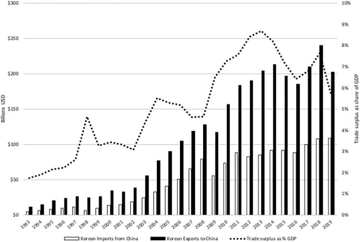
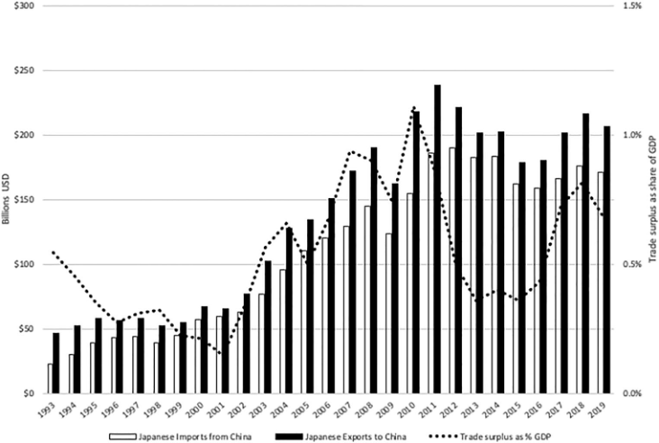

收录于合集
以下文章来源于欧亚系统科学研究会 ，作者谈行藏
欧亚系统科学研究会 .
让系统增值，为创新添砖
作品简介 ****
作者： Ji-Young Lee，美利坚大学国际服务学院副教授。
编译： 欧亚系统科学研究会
来源： Lee, Ji-Young, Eugeniu Han, and Keren Zhu. “Decoupling from China: how US Asian allies responded to the Huawei ban.” Australian Journal of International Affairs (2022): 1-21.
导 读
在特朗普执政期间，美国轰轰烈烈地开始了对华为的制裁，并呼吁其全球盟友加入。两年多时间过去，美国盟友在对待华为的态度上，已经各有所表现。本文作者提出，
美国与中国的竞争，是经济、安全、技术层面全方位的，而为了竞争，美国在亚太地区的联盟网络得形成一盘棋，而地区内盟友对华为禁令的态度，能体现出他们对中美竞争的态度。
本文以澳大利亚、日本、韩国三国作为代表进行分析，
其中澳大利亚对中国的态度最为激烈，早于美国宣布华为禁令，甚至积极呼吁各国防备中国的干涉和可能的技术入侵；日本在行动上坚定，态度表达上却温和；韩国是态度和行动都最为含混的代表。
究其原因，作者认为，澳大利亚在中国-
菲律宾南海仲裁之后，就对中国在亚太地区的野心有所担忧，其积极防备、反制的态度超越了其对经济问题的关注。而韩国恰恰相反，进步派的文在寅政府认为解决朝韩问题是当前韩国的重中之重，还希望在萨德问题后积极缓和与中国的关系，同时也担心华为禁令可能是美国的政治陷阱。日本的坚定手段，出于其自身希望在外交、贸易领域全方位多元化的追求，他们认为中美竞争中有日本的机会，但在表达上，又处于与北京缓和关系的阶段。
总体而言，作者认为美国与各盟友之间存在“联盟光晕”，光晕中的各国之间依然存在信任问题，对中国态度和评价的不一致可能导致盟友的不可靠。美国盟友体系在华为禁令上所透露出来的“薄弱环节”，或成为中国应对美国技术竞争与封锁的突破点。欧亚系统科学研究特编译本文，供读者思考。文章原刊于Australian
Journal of International Affairs，仅代表作者本人观点。

**
**
2019年5月，美国开始对华为进行限制，2020年特朗普发布了禁止“利用美国技术的外国芯片对华为销售”的政令。紧接着，华盛顿开始积极推动他们在亚太地区的盟友，主要是澳大利亚、韩国、日本，一起在技术上封锁中国。
因为中国目前已经成为三国最大的贸易伙伴，对他们而言，最好的策略，就是在维持与华盛顿的强军事联盟同时，与北京保持良好关系。 因此，目前三国都在采取一种“分裂的外交政策” （bifurcated foreign policy） ，以对冲未来的动荡。

▲ 图1：澳、韩、日三国与中国贸易额在GDP中的百分比
在美国看来，其与中国的竞争，是经济、安全、技术层面全方位的，而亚太地区的联盟网络得形成一盘棋。同时，美国积极推动与中国供应链脱钩的时候，它的盟友也意识到了跟中国在贸易上相互绑定，尤其在技术供应链上依赖中国，有潜在的安全风险。在这种情况下，美国需要思考的问题是：如何整合亚太地区盟友。
本文作者采用了施耐德（Glenn Snyder）的“联盟光晕（alliance halo）”概念，指出： 光晕中的各联盟个体，可能会为了预防其他盟友的不可靠，而自己先变得不可靠。 这种光晕式的联盟关系，可能使盟友产生对政治陷阱的恐惧、对多方对冲的考量，甚至出现威胁退出联盟的情况。
以上问题都会对美国在亚太地区联盟网络造成长期后果。而其中核心问题在于：当前世界，传统安全问题、经济问题之间的分野不断模糊。那么，美国和其盟友之间，就超出联盟协议的事项，可能进行怎样的合作？在华为问题上各盟友的行为、立场，就代表了其对中国的理解和偏好。
通过分析三个国家对华为的政策，作者得出两个结论：
首先，对于美国希望通过“联盟光晕”建立的对华为禁令联盟，澳、日、韩三国做出了不同反应。 澳大利亚最直接，甚至先于美国发出了禁令，这与韩国相对温和的反应形成鲜明对比。日本的禁令也比较坚定，但与澳大利亚相比，显得颇为低调。
其次，三个国家的不同反应和选择，主要源于他们自己对华为和中国相关安全风险的评估。 也就是说，做决定的关键不是他们与美国的盟友关系，而是对北京的判断。美国为了敦促盟友限制华为，在对亚洲盟友的激励上也表现得非常激进，试图通过盟友间在技术、基础设施、通信和国防方面的网络化架构，应对来自中国的挑战。这种激进反而让韩国担心其中有政治陷阱。澳大利亚和日本的利益类似，他们希望限制中国在地区安全和未来技术方面的地位和重要性，因此也不会仅仅与美国结盟。同时，因为前述的对冲理念，这些美国盟友各自的政策也会给相互间外交造成障碍。
作者认为对澳、日、韩三国进行结构化的重点比较研究的价值在于：（1）三国都与美国建立了正式的军事联盟，需要美国继续坚守承诺，维护现有国际秩序，并在国家防务上支持他们。（2）他们的政权类型相同，拥护类似的自由民主价值观和个人自由、权利平等和法治等理想。（3）中国是这三个国家的最大贸易伙伴。重要的是，这三个国家的国内政策制定者都非常清楚，他们的经济未来与中国深度捆绑，但还没有深度到不能考虑“封禁华为”的地步。
1
美中竞争时代的盟军可靠性
施耐德的“联盟光晕”理论中表示：盟友们希望更多的相互支持，在联盟条约外的小事上，也可以达成共识，一致行动。要理解中国的经济实力如何影响美国联盟网络，就需要理解联盟基本军事承诺之外的政治半影——这些在“联盟光晕”理念下建立的相互支持的期望。这是联盟的“范式”，相互间的支持充满未知的可能性。
这一概念提供了一个有用框架，用以分析美国盟友对中国的“策略动态”。对于他们，中国的定位是非敌非友——形式既没有严峻到需要动武的程度，但也带来了经济和安全方面的潜在风险。根据“联盟光晕”理念，伊恩·亨利指出：特定的国家行为受联盟忠诚程度的影响，而联盟的可靠性又取决于“盟友们对特定利益的相对价值和追求方式的认可程度”。
基于这一理论见解，我们发现：除军事行动外，与中国经济相关的安全风险依然可能使联盟各国，因对彼此的可靠性认知而进行政治博弈。当“联盟光晕”中的各国在特定利益上出现分歧时，它们会认为盟友不可靠，进而采取行动。这些行动可能包括：政策对冲，外交限制倡议，联盟内讨价还价，威胁背叛，给盟友设陷阱；在极端情况下还可能有：废除联盟，形成运动，或增加核储备。
例如：美国特朗普政府为争取盟友支持就警告说，华盛顿可能不得不禁止与使用华为5G网络的盟友分享情报。各盟友在针对中国的经济和外交政策上有不同的观念，特别是关于两个问题：（1）与中国的经济相互依存构成多大的安全风险；（2）中国的技术部门是否应该被禁止。这些差异导致了对政治陷阱的担忧，政策对冲设计，甚至盟友关系废除的威胁，这些都表明美国联盟网络中盟友并不可靠。鉴于华为问题关注的是与中国经济相关的未来风险，而非明显的军事威胁，对于美国及其亚洲盟友而言，如何在盟国联盟网络内建立互信是一个挑战，尤其是在开始时。
在美国看来，追求全球供应链与中国技术公司脱钩，主要理由是中国经济体系的关联性——市场活动常与支持中国政府的其他目标相联系。对美国政策制定者来说，华为禁令是他们长期以来忧虑中国产业政策——例如“中国制造2025”——的一个结果，华盛顿认为这些政策是为中国的利益服务的。2020年《美国对中华人民共和国的战略方针（国防部）》中就表达过这种怀疑。
从美中战略竞争的角度来看，华为禁令旨在防止中国获取全球技术领导地位，这一位置不只是口碑荣誉，还能使获胜者在规模经济、范围经济方面具有先发优势，以及收集信息和为追随者做决定的能力。 尤其是美国政府还认为，华为是中国工业和军事现代化进程中不可或缺的一部分：它参与了人工智能“国家队”等项目，这些项目旨在强化民用领域的开放创新平台，和国家安全领域的“军民融合”。从这个角度来看，华为是中国军事现代化的技术推动者，反过来，就是美国及其亚洲盟友的重大威胁。
据报道，美国向其盟友分享了保密情报，认定华为留了“后门”，允许其设备在运营商不知情的情况下访问网络，但我们还不清楚是否有确切证据。美国对盟友的“劝说”内容要点还有：中国可能根据《国家安全法》要求华为和其他技术公司妥协；以及对未来电信网络架构的担忧——蜂窝塔设备将在新的5G架构中承担一些“核心”功能，从而使华为以及中国政府能够通过网络攻击破坏系统的核心。
美国媒体还多次表达对美军基地所在国用华为的担忧，因为这些基地的大量信息需要通过民用网络传输。特朗普政府曾威胁说，如果盟友在其5G网络中使用华为设备，他们将停止情报共享，因为不安全的通信系统可能损害有价值的情报；美国前国务卿蓬佩奥也曾表示，美国可能会重新评估决定是否继续给用了华为设备的盟友提供军事支持。
2
澳大利亚：坚定回应
2018年，澳大利亚在美国之前，成为“五眼联盟”中第一个将华为排除在其5G项目之外的国家。 2018年8月11日，澳大利亚政府正式宣布：可能受外国政府指示，违背澳达利亚法律的公司，可能会被放弃，原因则是运营商保护5G网络安全的合理诉求。虽然这份声明没有明确提到华为，但释放了堪培拉对华为立场的明确信号。决定中海提到了《2017年电信和其他立法修正案》，该法案敦促澳大利亚运营商解决政府对外国主体的间谍、破坏行为的担忧。澳大利亚政府随后建立了关键基础设施中心，议会于2018年通过了新的《关键基础设施安全法》。
澳大利亚是一个代表，它对华为潜在安全风险的态度和处理方式与美国一致。早在2012年，出于网络安全考虑，澳大利亚就将华为排除在国家宽带网络的招标名单之外。2016年，澳大利亚政府决定拒绝两家中国公司——中国国家电网和香港长江基础设施——对该国最大的能源电网Ausgrid的竞标。2016年做决定时，澳大利亚—中国自由贸易协定（FTA）生效仅八个月。
澳大利亚禁止华为参与其关键基础设施和5G部署这一行为，决定因素是安全评估，而非美国的敦促。现有证据表明，是堪培拉在敦促华盛顿采取行动。 时任澳大利亚总理特恩布尔表示，他已经“在多个场合向特朗普总统和其他美国官员提出了这个问题”。美国“已经接受了澳大利亚关于中国干涉问题的线索”。澳大利亚官方也曾与日本，韩国，德国和其他欧洲国家表示担忧。根据澳大利亚信号局局长的说法，将华为排除在澳大利亚5G网络之外的决定主要是基于“自身风险偏好”。除了澳大利亚对华为的一系列决定早于美国禁令外，值得注意的是，2018年禁止华为的决定几乎没有遇到国内选民的任何反对意见。
在美国三个盟友里，澳大利亚关于华为的辩论更加激烈、公开，这些辩论的背景则是“民主”和“专制”的意识形态分歧。支持禁令的主要论点集中在网络安全和澳大利亚网络在危机时期受攻击的可能性，支持者强调的，是危机时期，可能存在的“后门”和网络破坏的潜在风险，而澳大利亚国家安全机构表示，他们没有应对这些风险的技术方案。主要的反驳论点是：禁止华为设备不会让澳大利亚在网络战线上更加安全。中国黑客还有许多其他方式进入澳大利亚的网络，包括微软在内的商业软件的漏洞一样可以利用。
那么，澳大利亚先于美国禁止华为该怎么解释呢？ 与韩国、日本一样，中国是澳大利亚最大的贸易伙伴。 然而，澳大利亚政策行为表明，经济考量并不是他们的重中之重。
2018-2019年，澳大利亚所有出口额的32.6%售往中国，而其所有进口的19%来自中国。2015年《中澳自由贸易协定》签署以后至2020年，澳大利亚对中国的出口翻了一番，从中国的进口则增长了42%。此外，澳大利亚对中国的持续贸易顺差在2018年达到GDP的3.8%（见图2）；中国是澳大利亚最大的游客来源地；澳大利亚大学的收入依赖中国国际学生，截至2020年12月，中国学生占所有国际学生的28%。
禁止华为也不会给澳大利亚国内电信公司带来明显经济利益，因为澳大利亚没有能够取代华为的国内公司。 澳大利亚2018年8月做决定时，华为与TPG启动了一个数十亿美元的项目，TPG是一家美国公司，根据与华为的协议对该项目进行了大量投资。尽管知道禁令可能会减缓5G网络的建设速度，澳大利亚还是做了决定。堪培拉显然承担了非常高的经济风险。

** ▲ 图2：澳大利亚与中国的贸易**
要解释澳大利亚的华为禁令，不能排除其国内政治因素，特别关于“应对外国干涉”这一议题。根据Rory Medcalf分析，澳大利亚可能成为“反对中国干涉国内事务第一行动者”，其基础是整个政府的态度——与中国的经济机会应该与对风险的认识相平衡。2017年，工党参议员萨姆·达斯蒂亚里（Sam Dastyari）垮台，原因是其接受了一位中国亿万富翁的捐款，以换取他支持中国在南海的领土主张。这一事件成为澳大利亚国内政治和对外关系领域最重要的丑闻之一。因此可以说，澳大利亚对华为的处理，是应对中国在澳大利亚境内寻求影响力的活动的一种方式。
在韩国和澳大利亚，国内选举、公众舆论和精英偏好，都表现出了对“与美国结盟”的支持。但与韩国相比，澳大利亚的安全行动和对中国日益强硬地区态度的反应，与美国更加一致。北京拒绝接受菲律宾发起的“南海仲裁”结果一事，是澳大利亚对中国意图的思考和评估的转折点。时任总理马尔科姆·特恩布尔（Malcolm Turnbull）在2017年“敦促中国尊重他国主权”，并告诉其他国家：中国想在东半球推行“现代门罗主义”，以主导地区。
与日本类似， 地缘经济方面的考虑在澳大利亚对华为的态度中也发挥了重要作用 。2016年，华为与所罗门群岛政府达成协议，建造一条通往澳大利亚的海底电缆，引发了堪培拉关于中国在南太平洋地区不断扩张的激烈辩论，澳大利亚人认为该地区对国家安全具有重要战略意义。2018年，澳大利亚通过资助巴布亚新几内亚、所罗门群岛和澳大利亚之间的水下互联网电缆网络来对抗华为的项目，耗资约2亿澳元。澳大利亚基础设施融资机构的建立就是为了给该地区的基础设施项目提供资金。
其后，中澳关系继续螺旋式下降。澳大利亚政府呼吁对新冠病毒的起源进行无限期调查，随后，北京列举了一系列被称为“14宗罪”的澳大利亚贸易制裁行为，禁止华为是其中之一。外界认为，这些行为与中国对抗韩国部署萨德的策略类似，是将经济依存关系变成了战略工具。与此同时，莫里森政府否决了维多利亚州与中国的“一带一路”协议。
3
韩国：有限回应
韩国对美国倡导华为禁令的回应，相对沉默且有限。 韩国政府的基本立场是：具体公司有权自己决定是否禁止华为，政府采购政策没有变化。 2019年5月，在美国华为禁令后不久，韩国国防部对韩国军方使用的所有华为设备进行了全面清点，做了剔除或更换，其中包括LG U Plus在2015年捐赠给军方的43365部手机。韩国公司则采取了低调的态度，但总体上一直在限制与华为的合作。LG U Plus是唯一一家仍在使用华为设备的韩国主要电信公司。
2018年，韩国议会开始讨论与华为设备相关的潜在安全风险，政府成立了5G专家咨询委员会。2018年10月，国民议会传唤华为韩国首席执行官Shawn Meng和LG U Plus首席执行官Ha Hyun- hwoi询问华为设备的安全问题。对华为设备中存在后门的怀疑，是议会调查的核心。2019年8月，咨询委员会扩张为技术和科学部下属的5G安全委员会，以调查各种安全问题并讨论应对措施。韩国科技部长表示，华为没有任何已知的安全问题，但承诺进一步调查。
韩国三大电信公司KT、SK和LG U Plus在过去5、6年中都从华为购买了大量设备。当LG U Plus在2013年与华为达成协议时，美国已经提醒韩国与华为相关的安全风险。KT和SK随后在5G设备供应商名单中删除了华为。根据2013年与华为的采购协议，LG U Plus在2018年部署了超过1万个基站，但到了2019年，选择了三星作为首尔新增基站的设备供应商。但是，一旦华为设备集成到基础设施中，就很难将其排除出去了。
与日本、澳大利亚对比，韩国在追求华为与全球供应链脱钩上和美国分歧更大。大多数韩国人在美中竞争的背景下看待美国对华为的禁令，华为主要被看作追求特朗普“美国优先”计划的美国问题，而不是韩国自己要解决的安全风险。 再加上对美国不可靠的认识，韩国人认为，特朗普政府对中国的经济和外交政策，是在逼迫首尔参与贸易战，在华盛顿和北京之间选边站队。
公共舆论中，韩国对华为相关风险的看法和应对态度可以总结为两个观点。一种观点是，有确凿的证据，将华为设备与损害韩国国家安全的行为联系起来前，韩国不应该匆忙承诺禁止华为。另一种观点认为，韩国政府应该像澳大利亚、日本和其他国家那样禁止华为。持这一观点的学者和专家表达了类似的安全担忧，认为华为不可能独立于中国政府，历史记录证明在国家安全问题上不该轻易信任华为。也有人认为，出于美韩盟友关系，韩国应该支持美国的禁令。
华盛顿和首尔认为对方不可靠的迹象比比皆是。2019年5月美国宣布禁令后，美国驻首尔大使哈里斯（Harris）从盟国通信系统的角度强调5G供应商可靠性的重要，韩国总统办公室回应说：我国目前使用华为的5G移动网络产品对韩美联盟的军事安全没有影响，美韩应该避免在相关问题上采取二元对立的态度，而应该扩大合作空间，使双方（华盛顿和首尔）能够以建设性的方式共同努力。哈里斯随后表示，他不同意这一观点，并表示如果韩国继续使用华为设备，美国可能会不再与韩国分享敏感信息。2020年1月，美国负责政策的国防部副部长约翰·鲁德（John Rood）对美国众议院军事委员会表示，“如果我们信任的合作伙伴这样做——指韩国尚未禁止华为，我们就需要担心给出信息的安全性”。
如何解释韩国对华为的态度与美国，甚至澳大利亚和日本之间的不同呢？
首先，其立场有强大的经济因素：为缓和中国因韩国2017年部署萨德而利用经济杠杆进行的制裁，首尔选择妥协，以改善与北京的关系。 作为美国的条约盟友，韩国寻求恢复与中国关系的立场表现在文在寅政府的“平衡外交”政策里，其旨在培养中间立场，以预防、避免选择一方而明显伤害另一方。 中国是韩国最大的贸易伙伴，2018年占其出口的26.8%，而美国仅占12%。与澳大利亚和日本一样，韩国对中国的贸易顺差在2019年占GDP的5.7%（图3），甚至超过澳大利亚和日本对中国的贸易顺差（图1）。此外，华为进口了价值107亿美元的韩国产品，相当于韩国电子产品出口的17%。
韩国对其经济未来的关注无疑是首尔与北京保持良好关系的最大动力之一。具体而言，首尔认为5G无线技术是其在第四次工业革命中取得成功的关键。预计到2025年，韩国的5G网络将向韩国经济注入至少30.3万亿韩元（30.3亿美元），相当于2025年韩国GDP的1.51%。根据韩国工业联合会的一份报告，总书记对韩国的国事访问将使其与北京的双边关系恢复到萨德争端前的水平。
其次，如果说澳大利亚对待华为问题主要考虑中国的干涉风险，那么韩国对待中国问题，则考虑北京可能提供的机会，特别是在与朝鲜的关系上。 学者指出，文在寅政府在外交方面，将“朝鲜问题取得突破”作为首要目标。这反过来又严重影响了其对中美战略竞争应对方式。韩国一直克制地拥抱美国印太战略，和其他遏制中国的区域倡议。换句话说，除了因对华为的风险评估差异所引发的，对政治陷阱的恐惧之外，韩国自己的地缘政治、国内目的，对朝鲜的优先考虑，以及同时得到北京和华盛顿支持的需要，都导致了它作为盟友不情不愿的态度。

▲ 图3：韩国与中国的贸易
这种战略行为有国内政治和意识形态的因素。韩国保守派倾向于将朝鲜视为构成生存威胁的主要敌人，进步派则将朝鲜视为“兄弟”，而美国则是干涉朝韩关系的局外人。现任进步政府的政策目标与中国的政策目标更加一致。北京一直强调应就制裁问题与平壤进行接触，并支持朝鲜半岛内部对话。
第三，韩国仍在处理部署萨德的余波。 一方面，可以说中国对萨德的经济报复，让韩国政府和商界更加不愿与中国在贸易问题上产生新的争端。2017年10月，文在寅政府为努力恢复与北京关系提出了“三不”：韩国政府不考虑进一步部署萨德，不会参与美国的导弹防御系统，也不打算将美- 韩-日三方安全合作发展为军事同盟。
另一方面，值得注意的是，中国的经济胁迫也使韩国公众认识到中国对韩国国家利益有潜在威胁。文在寅政府的外交举措被称为“新南方政策”，旨在加强与印度和东盟的合作，以使其外交选择多样化，并减少对中国的经济依赖。与日本类似，韩国公司也一直在努力减少对中国的依赖，三星、起亚和现代汽车缩减了在中国的投资。韩国政府和企业也在采取多元化战略，发展与越南、印度和其他东南亚国家的关系。
4
日本：低调回应
从本质上讲，日本对华为的双重反应，结合了行动的果断性和言语的模糊性，源自日本政府的战略谨慎、对中国的暗中不信任，以及不希望损害与北京关系的愿望。 总的来说，日本的反应更接近澳大利亚。 2018年12月，日本政府采购政策修订，以国家安全和保密要求为由，事实上禁止华为和中兴通讯。此后，日本政府利用法律制度手段，逐步加强了禁止措施。当时的内阁官房长官菅义伟说：确保网络安全的关键就是不要购买有恶意软件的设备或系统。
与澳大利亚不同的是，日本试图避免明确对抗中国和中国公司。 日本政府把是否与华为合作的决定丢给私营公司，但提供了引导，和法律、财政激励措施，以切断他们与华为的联系。2019年5月，华为被列入日本贸易管制警报名单，这是一个出口商应当注意的集团、公司的数据库，由日本安全贸易管制信息中心运营。这一决定与美国商务部禁止美国企业向华为出口的实体清单保持了一致。2020年5月，日本政府决定要求所有独立的行政机构和特定的私人数据处理公司禁用华为设备。
华为在日本手机基站占比超过13%。2019年，华为从日本公司采购智能手机零部件和材料约1.1万亿日元。日本政府于2018年12月宣布新的采购政策后，日本主要公司停止使用华为设备。软银作为日本第三大电信公司，与华为的关系最长，已决定用诺基亚和爱立信取代现有的华为4G网络设备，并避免将华为用于5G。这一举措得到了日本政府法律的支持——为使用日本、欧洲或美国5G设备的日本公司提供15%的公司税减免。
与韩国相比，日本对美国呼吁“华为脱钩”的回应，是其自身追求日本供应链多样化政策的自然延伸，被称为“中国加一”。日本试图通过“积极的国际多元化活动”来减少对中国经济的依赖，特别是在北京于2010年削减了对钓鱼岛地区的稀土出口之后。日本尝试发展国内制造商，并与澳大利亚、印度和美国建立新的供应链。2020年，政府制定22亿美元的刺激计划，帮助企业将生产设施迁出中国。日本经济产业省2020年向NEC、富士通等公司提供700亿日元，用于建设5G设备和网络。根据东京商光研究公司2020年2月的一项调查，2600家公司中，超过37%的公司表示，他们正在将采购渠道发展到中国以外的地方。
日本对华为禁令的反应如何解释？
与韩国类似，日本防卫省国家防卫研究所的《2020年东亚战略评估报告》表明，日本人从美中竞争的角度来看待华为禁令。 但首尔和东京之间的关键不同在于，日本的战略规划者和政治领导人将“美国转变态度，认为中国是战略竞争对手”这一情况解释成了对日本有利。 日本对华为的考虑、对未来风险的评估，与日本“中国崛起是长期国家利益最大的挑战”这一认知有关。日本对华政策的总体趋势是发展自己的防御能力，并以竞争者的眼光看待北京，加强与美国的联盟，以及寻求东北亚以外的安全策略以使外交选择多元化。在日本国内，人们更加重视经济治国方略，这与安倍第二任期间对中国威胁的评估增强有很大关系。
与澳大利亚的情况一样，日本对华为的决定也与其自身对情报、关键基础设施的担忧和风险评估有关，也与美国趋于一致。少量公开论述表达了与中国相关的焦虑。日本公众对中国日益强硬的态度也是日本政府考虑的因素。2018年12月政府宣布新政策后，69%的日本受访者支持对华为和中兴的禁令，12%的受访者表示反对。与澳大利亚类似，华为对日本大学的搜索项目的资助和日本政府的行为，这些事件的公共讨论中，大背景是担忧华为可能成为窃取日本大学先进技术和信息的渠道。
日本对华为的低调态度可以通过政治和经济原因来解释。在特朗普政府要求禁止华为时，日本和中国正在努力改善双边关系，最终在2018年和2019年的两次峰会上达到高潮。中国对日本经济的经济影响是巨大的。2018年，日本23.2%的进口额和19.51%的出口额来自中国，而美日之间的数据是11.17%和19.05%。与此同时，中日间贸易非常平衡，2019年日本对中国的贸易顺差仅占其GDP的0.7%（图4）。在新冠疫情之前，中国游客占访日外国游客的30.1%，是排在韩国（17.5%）和台湾（15.3%）之前的最大群体。2018年，中国承接了日本企业离岸外包项目的30%。

▲ 图4：日本与中国的贸易
对日本的供应链而言，中国很重要。2019年运往日本的汽车零部件中有37%来自中国，半成品进口的21%来自中国。尽管日本商界对友好关系的支持或许没有改变，但随着整个社会对中国的怀疑越来越多，他们在主张与公国合作上也会更沉默。同时，日本企业也支持日本与美国的关系。
日本在中美竞争中的策略可以概括为：将多元化措施作为对冲策略的一部分。在国家和区域安全方面，日本跟澳大利亚一样，一直在积极推动规则秩序。2014年5月，安倍曾试图联合美国、日本、澳大利亚、印度和东盟，推进法治承诺。
日本还在寻求扩大泛太平洋伙伴关系（TPP）的成员范围，以促进供应链多样化。2020年8月，日本、印度、澳大利亚开始谈判，尝试形成三边供应链恢复计划，以减少对中国的依赖。
5
** 结论**
2021年3月，美国国家安全顾问杰克·沙利文（Jake Sullivan）宣布，四方领导人——美国、日本、印度和澳大利亚——已同意成立工作组，负责制定5G和人工智能等新兴技术的标准。2021年4、5月，拜登跟菅义伟、文在寅进行峰会上，重组全球供应链是最重要的协议之一。这些事实表明，美国及其盟友在联盟合同之外的问题上也有相互支持。
作者提出，分析美国盟友的可靠性，有三个关键点：
首先，其最亲密的盟友对华为的反应表明，美国和其亚洲盟友之间，对中国全球扩张的忧虑程度不同，这可能会引起焦虑，和对美国设置联盟政治陷阱的担忧。美国在应对中国带来的经济机遇和挑战时，有必要管理盟友对相互支持的期望。
其次，在中美竞争的时代，解决经济和技术问题的努力进一步强调了，美国联盟网络中盟友之间需要相互依存和沟通。泉川康弘（Yasuhiro Izumikawa）关于中心辐射体系的形成研究表明，在塑造新国际秩序上，美国亚洲盟友的偏好和行为与美国的偏好和行为一样重要。
第三，美国在亚洲的联盟网络最初是为更传统的安全威胁而建立的。华盛顿及其盟友是否以及如何共同应对与中国相关的非军事风险，需要各国领导人之间就他们对中国的态度和手段上的分歧进行对话。
文章观点不代表本平台观点，本平台评译分享的文章均出于专业学习之用, 不以任何盈利为目的，内容主要呈现对原文的介绍，原文内容请通过各高校购买的数据库自行下载。